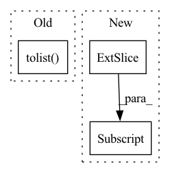

Pattern ID :16686
Before Change
regressors[reg] = df[reg]
// Make sure column order is consistent
regressors = regressors[sorted(regressors.columns.tolist() )]
regressors = regressors.values
if n_lags == 0:After Change
for i in range(0, multiplicative_regressors.shape[1]):
// stride into num_forecast at dim=1 for each sample, just like we did with time
multiplicative_regressor_feature_windows.append(
_stride_time_features_for_forecasts(multiplicative_regressors[:, i] ))
multiplicative_regressors = np.dstack(multiplicative_regressor_feature_windows)
regressors["multiplicative"] = multiplicative_regressors
In pattern: SUPERPATTERN
Frequency: 4
Non-data size: 3
Instances Fragment ID: 55904512
Project Name: ourownstory/neural_prophet
Commit Name: 71ff07c9baa8002f2611b7f6d3f8f94825e59b1b
Time: 2020-09-14
Author: hansika.hewamalage@monash.edu
File Name: neuralprophet/time_dataset.py
M Class Name: AnonimousClass
N Class Name: AnonimousClass
M Method Name: tabularize_univariate_datetime(10)
N Method Name: tabularize_univariate_datetime(10)
M Parent Class:
N Parent Class:
M File Name: neuralprophet/time_dataset.py
N File Name: neuralprophet/time_dataset.py
M Start Line: 195
M End Line: 213
N Start Line: 201
N End Line: 267
Before Change
else:
edges = self.edge_index[:, 0:self.num_edges].T.tolist()
edges_label = self.edge_label.tolist()
edges_and_label = list(zip(edges, edges_label))
random.shuffle(edges_and_label)
edges, edges_label = zip(*edges_and_label)
split_offset = 0After Change
edges_split_i = shuffled_edge_indices[split_offset:]
// shallow copy all attributes
graph_new = copy.copy(self)
graph_new.edge_label_index = self.edge_index[:, edges_split_i]
graph_new.edge_label = torch.index_select(self.edge_label,
0, edges_split_i)
graph_new.edge_split_index = edges_split_i
split_graphs.append(graph_new) Fragment ID: 55904508
Project Name: snap-stanford/deepsnap
Commit Name: 30916909252bba09897b0e688bba6cf63f113671
Time: 2020-11-24
Author: youjiaxuan@gmail.com
File Name: deepsnap/graph.py
M Class Name: Graph
N Class Name: Graph
M Method Name: _split_edge(2)
N Method Name: _split_edge(2)
M Parent Class: object
N Parent Class: object
M File Name: deepsnap/graph.py
N File Name: deepsnap/graph.py
M Start Line: 981
M End Line: 1010
N Start Line: 981
N End Line: 1001
Before Change
centers = []
for meter in meters:
kmeans = KMeans(n_clusters=2).fit(meter)
centers += [sorted([a[0] for a in kmeans.cluster_centers_.tolist() ])]
centers = np.array(centers)
mean = centers.mean(axis=0)
std = centers.std(axis=0)After Change
// Initialize center list
centers = []
for idx in range(num_meters):
meter = ser[:, :, idx]
kmeans = KMeans(n_clusters=2).fit(meter)
cc = kmeans.cluster_centers_
// Ensure the lesser value goes first
cc = np.sort(cc, axis=0) Fragment ID: 55904510
Project Name: uca-datalab/nilm-thresholding
Commit Name: 437d41a1676d2df846000594ec3a9bab52e49751
Time: 2020-05-07
Author: danipg1409@gmail.com
File Name: better_nilm/model/preprocessing.py
M Class Name: AnonimousClass
N Class Name: AnonimousClass
M Method Name: _get_cluster_centroids(1)
N Method Name: _get_cluster_centroids(1)
M Parent Class:
N Parent Class:
M File Name: better_nilm/model/preprocessing.py
N File Name: better_nilm/model/preprocessing.py
M Start Line: 97
M End Line: 110
N Start Line: 101
N End Line: 117
Before Change
// to avoid an annoying "UserWarning: loadtxt: Empty input file"
with warnings.catch_warnings():
warnings.simplefilter("ignore")
annotations = np.loadtxt(fname=label_path, delimiter=" ", ndmin=2).tolist()
img = np.array(Image.open(os.path.join(config.ROOT_DIR, self.fname, img_name)).convert("RGB"))
if self.rect_training:After Change
warnings.simplefilter("ignore")
labels = np.loadtxt(fname=label_path, delimiter=" ", ndmin=2)
// removing annotations with negative values
labels = labels[np.all(labels>=0, axis=1),:]
img = np.array(Image.open(os.path.join(config.ROOT_DIR, self.fname, img_name)).convert("RGB"))
sh, sw = img.shape[0:2] Fragment ID: 55904507
Project Name: alessandromondin/yolov5m
Commit Name: 6b474e8468a32129b9cc3499a6c96ef9cad8fbc3
Time: 2022-11-25
Author: alessandromondin00@gmail.com
File Name: dataset_ultra.py
M Class Name: MS_COCO_2017
N Class Name: MS_COCO_2017
M Method Name: __getitem__(2)
N Method Name: __getitem__(2)
M Parent Class: Dataset
N Parent Class: Dataset
M File Name: dataset_ultra.py
N File Name: dataset_ultra.py
M Start Line: 94
M End Line: 118
N Start Line: 99
N End Line: 128